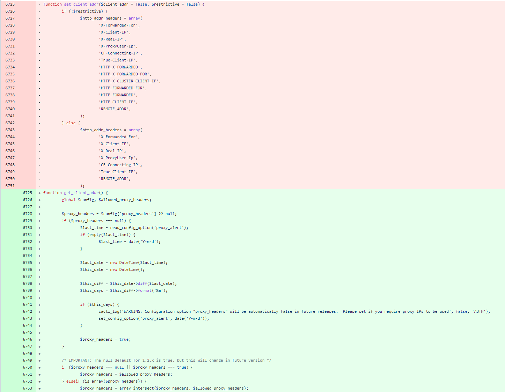
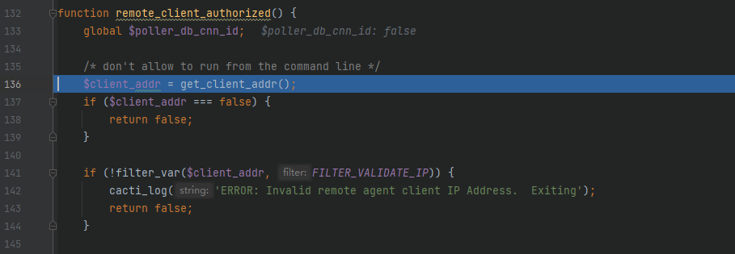
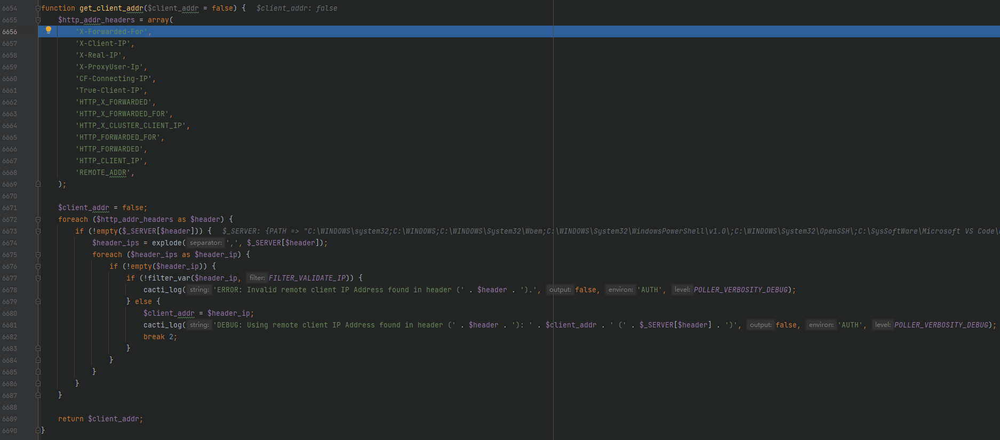
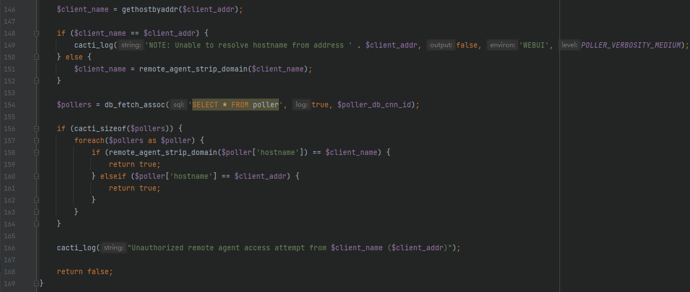
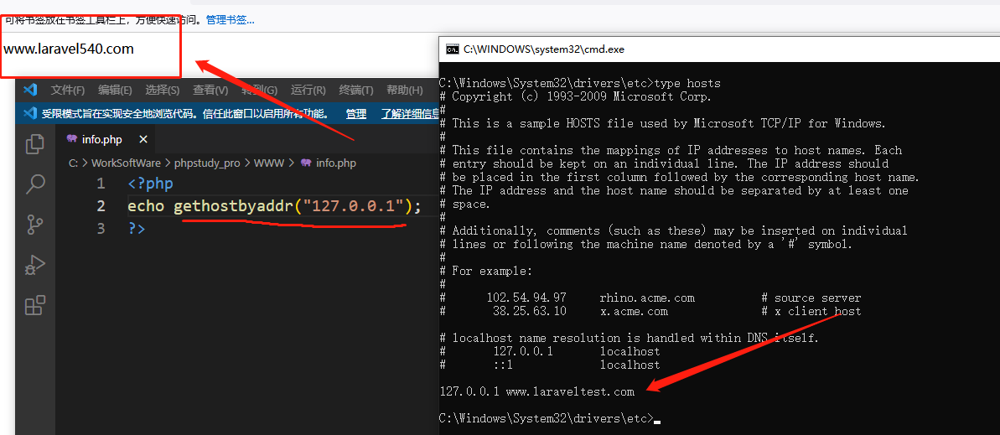
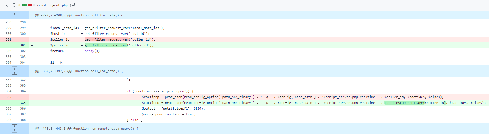
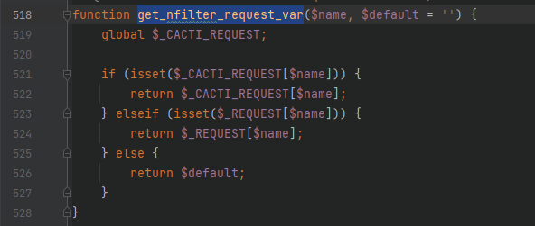
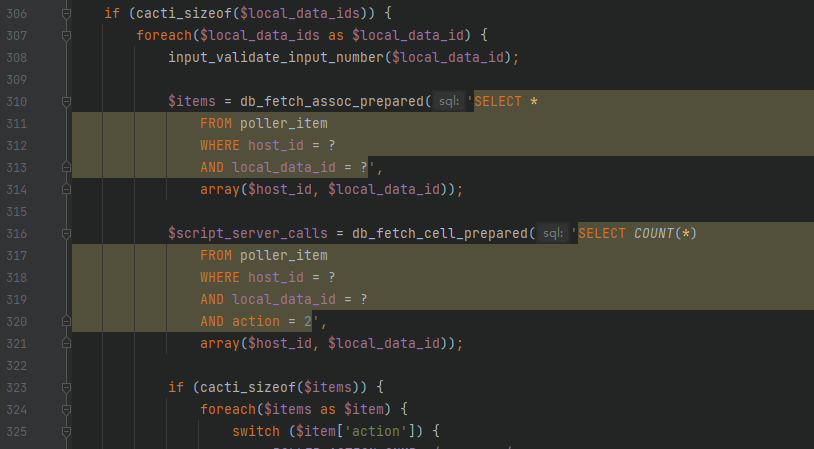
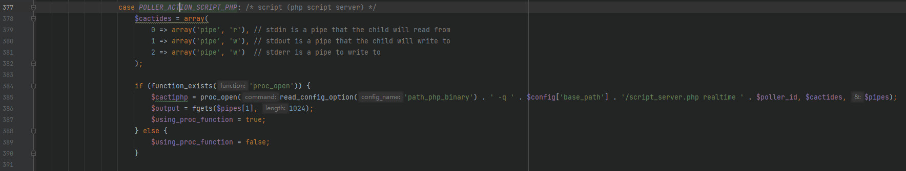

Cacti_1.2.22_前台RCE_CVE-2022-46169
本文首发于奇安信攻防社区：https://forum.butian.net/share/2057
本文仅用于技术讨论与研究，文中的实现方法切勿应用在任何违法场景。如因涉嫌违法造成的一切不良影响，本文作者概不负责。
0x00 漏洞简介
2022年12月，奇安信 CERT 发布了一则漏洞通告，Cacti （基于 Web 的开源网络监视和绘图工具）存在命令执行漏洞 CVE-2022-46169 ，攻击者可通过构造恶意请求在无需登录的情况下向函数中注入命令，达到命令执行的目的，该漏洞影响范围很大，建议升级到最新无漏洞版本。
0x01 漏洞影响
cacti < 1.2.23
0x02 环境搭建
该系统为开源系统，github 地址：https://github.com/Cacti/cacti
直接选择 1.2.22 Release 版本下载并进行安装，根目录下有一个 cacti.sql ，导入数据库，然后将 include/config.php.dist 复制为 include/config.php ，并将数据库配置按自己的改好。
访问 http://localhost/cacti/ 进行安装
0x03 漏洞分析
漏洞分为两部分，登录绕过与命令注入
github 有 commit 记录，可以帮我们快速找到漏洞点
1 | |
登录绕过
commit 记录比较少，命令注入部分很容易看到位置，而大部分的修复全都跟 get_client_addr 这个函数有关，这个函数一看就知道与客户端 IP 有关。先简单看一下相关修复记录

原本的代码是从 Client-IP 、X-Forwarded-For 等可以由用户控制的参数中获取值，而修改的代码则是限制了获取，不让从这些可控的参数中取值，因此可以猜测这个与登录绕过存在关系。
根据修复记录可以看到，命令注入的位置位于根目录的 remote_agent.php ，我们在这个文件刚好可以看到调用了上述说的 get_client_addr ，而这个文件是可以从 web 端进行访问的，大概的逻辑能看出来了，就是直接访问这个文件，通过输入的 ip 来绕过登录，最后导致命令执行，接下来看看这个文件的逻辑。
当我们直接访问 /remote_agent.php 可以来到如下的位置，前面加载的一堆 php 文件并没有阻挡我们，也就是前面不存在认真的地方

看到箭头指向的位置，这里是一个 () 函数 ，返回为 false 时会返回没有认证的提示并退出，因此认证就是在这个位置，跟进看看

前半部分如上，会进入 get_client_addr 也就是修复记录中的修复位置，返回 false 或者使用 filter_var 对 client_addr 进行判断，我们先跟进 get_client_addr 看看

这里的代码在上面也讲过了，实际上就是从 X-Forwarded-For等可控的参数中获取值，filter_var 进行过滤，正确的地址就可以返回，我们可以通过设置 X-Forwarded-For 等对其进行控制
接下来看到 remote_client_authorized 函数的下半部分

这里会使用 gethostbyaddr 对 client_addr 获取网络主机名，当 $client_name 与 $client_addr 不同时，进行 remote_agent_strip_domain 处理

从上图可以看到，就是截取点号前面的值
然后从数据库中的 poller 表中获取所有的 $pollers ，取出其 hostname 跟我们的 $client_name 比较，我们可以看到默认安装后的数据表 poller

可以看到这里只有一个值，是 localhost ，那既然这样的话，大多数情况下，我们传进去的值为 127.0.0.1 时，就会返回 true 了
为什么说是大多数情况呢？
当我们的 hosts 中设置了域名解析到 127.0.0.1 时，gethostbyaddr 函数就会返回该域名，就像这样

所有有时候测试时没有绕过去可以看看这个 hosts 文件是不是有其他定义
因此我们可以通过修改 X-Forwarded-For 来绕过这里的认证
注意：当服务器是 linux 时，hosts 默认有个 localhost 指向 127.0.0.1 ，而 windows 作为服务器时，默认没有任何指向，我们的 127.0.0.1 经过 gethostbyaddr 后会得到 windows 的主机名，而不是 localhost， 这样的情况是没有绕过认证的，但也是可以绕过的，这里留给读者自己思考一下。
命令注入
继续对代码进行分析

这里执行了一个 set_default_action 函数，跟进代码

这里比较看懂，就是是否存在 action 参数，不存在就设置为 $default ，存在就对其进行赋值，这里是 $_REQUEST ，可以是 post 或者 get
继续上面代码，这里是一个 switch...case... ，当我们的 action 是 polldata 时就可以进行修复 commit 中所提到的 poll_for_data 函数
我们先看一下 poll_for_data 修复记录

修改的参数为 $poller_id ，由 get_nfilter_request_var 改为了 get_filter_request_var ，从名字可以看个大概，原本是没有过滤的，现在改为过滤了，我们看看 get_nfilter_request_var 函数内部

这里是直接获取值，并不存在过滤，这使得我们的参数可控
第二处修复只是在第一处过滤的基础上又加了一层保险而已，没有太多需要关注的，接下来回到代码从第一处往下跟

这里的 $local_data_ids 也是传进来的值，可控。
接下来我们关注这里的 $items ，是从数据库的 poller_item 表中取出来的，这个数据表的数据在接下来起到了关键作用，但是它在数据库中默认为空。
这个数据需要管理后台来创建（也许是我没有看到哪里可以由前台就得到？希望有大佬解答）
接下来当 $items 有了数据并且他的成员中有一个 item 也是一个数组并且键为 action，值为 2 时，即可进入命令注入的漏洞所在

这里的 385 行就有一个 proc_open 可以命令执行。
0x04 漏洞修复
官方已经提供修复的版本，直接 github 下载即可
1 | |
0x05 总结
最后一步，实现 proc_open 这里也存在一定的难度，实现命令执行部分就由读者们自己去探索吧。